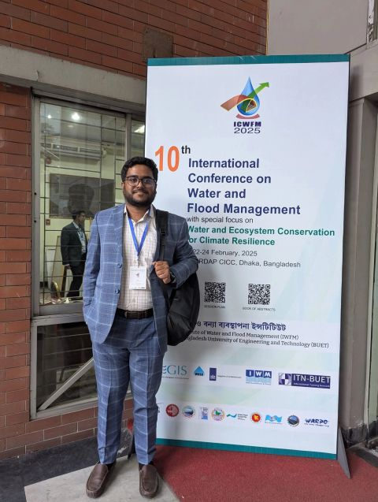

FIELDNOTES / VOLUME 01 2026
01 / 08
Designing
resilience.
Mapping change.
Md. Tahatul Azid — Urban & Regional Planner and climate & geospatial researcher.

ON THE GROUNDFrom evidence
to impact.↗
to impact.↗
RAJSHAHI — DHAKA — BEYOND
PHOTO / CONFERENCE ARCHIVE
SCROLL TO DISCOVER ↓23°48′ N · BANGLADESH
URBAN PLANNING✳CLIMATE ADAPTATION✳GEOSPATIAL INTELLIGENCE✳CIRCULAR ECONOMY✳COMMUNITY RESILIENCE✳URBAN PLANNING✳CLIMATE ADAPTATION✳GEOSPATIAL INTELLIGENCE✳
THE SERIES / EXPLORE BY EPISODE
Choose your chapter.
A researcher's evidence, a planner's proposals, and the field experiences that connect them.
NOW PLAYING / HIGHLIGHTS
From evidence to impact.
Explore the work by its place, method and real-world context.
THE NEXT CHAPTER
Let's make meaningful change.
Planning, GIS, environmental evidence and community-led resilience.
START A CONVERSATION